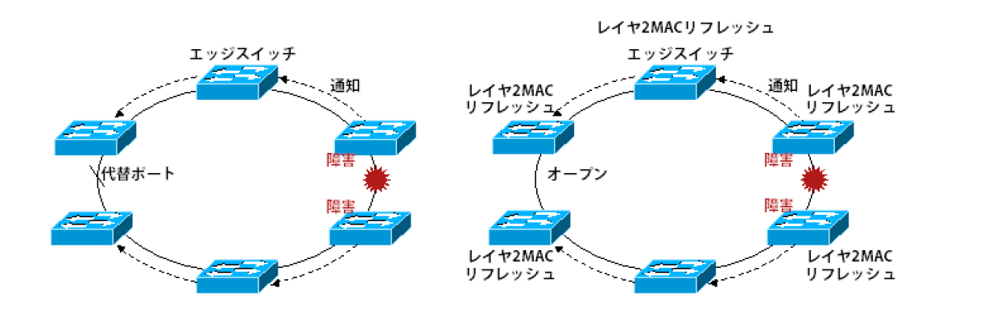

💡 ダークファイバを活用した自営業者向け広域リングトポロジの有用性
🌐 広域ネットワークの構築において、自営業者がダークファイバを利用し、リングトポロジを構築することの有用性について考察します。
⚙️ 動作のポイント
ダークファイバの特性: 未使用の光ファイバを借り受けることで、帯域幅とネットワーク構成の自由度を最大限に確保できます。
リングトポロジの利点: 経路が二重化されるため、一方の経路に障害が発生しても通信が継続される高い冗長性を提供します。
自営業者への恩恵: 高い信頼性と安定性が求められるビジネス（例：オンラインサービス、データバックアップ、リモートワーク基盤）において、専用線に匹敵するインフラを比較的低コストで構築可能です。
🧭 有用性
- 高可用性: メイン回線障害時でも、迂回経路によりサービス中断を最小限に抑えられます。
- 広帯域・低遅延: 専用の光ファイバを使用するため、安定した高速通信が保証されます。
- コスト効率: 初期投資は必要ですが、長期的に見て高額な専用線費用を削減できる可能性があります。
- セキュリティ向上: 物理的に独立したネットワークを持つことで、セキュリティリスクを低減できます。
- 柔軟な拡張性: 将来的な帯域増強やサービス追加にも柔軟に対応できます。
📘 まとめ: ダークファイバとリングトポロジの組み合わせは、自営業者にとって、高い信頼性、広帯域、そしてコスト効率を兼ね備えた、独立性の高いネットワークインフラ構築の強力な選択肢となります。
💡 レイヤ2リングトポロジにおけるREPの有用性およびRSTPとの比較
🌐 レイヤ2リングトポロジにおいて、Cisco独自のREP（Resilient Ethernet Protocol）と標準プロトコルであるRSTP（Rapid Spanning Tree Protocol）の有用性とその比較について解説します。
⚙️ 動作のポイント
リングトポロジの課題: レイヤ2ネットワークでリングを形成すると、ブロードキャストストームやMACアドレステーブルの不安定化を引き起こすループが発生します。これを防ぐためにプロトコルが必要です。
RSTP (IEEE 802.1w): スパニングツリープロトコル（STP）の高速版で、標準的なループ防止プロトコルです。数秒レベルでの収束を可能にします。
REP (Resilient Ethernet Protocol): Cisco独自のプロトコルで、リングトポロジに特化して設計されています。50ミリ秒以下の高速な収束時間を実現します。
REP (Resilient Ethernet Protocol) の動作原理: リング内の各ポートをセグメントIDとポートIDで識別し、プライマリポートとセカンダリポートを定義します。通常時はプライマリポートからトラフィックを転送し、セカンダリポートはブロック状態にあります。障害発生時には、ブロックされていたセカンダリポートを即座に開放し、迂回経路を確立することで、50ミリ秒以下の高速な収束時間を実現します。

🧭 REPとRSTPの比較
| 比較項目 |
REP (Resilient Ethernet Protocol) |
RSTP (Rapid Spanning Tree Protocol) |
| 収束速度 |
50ミリ秒以下で高速に収束し、サービス中断を最小限に抑えます。産業用ネットワークやメトロイーサネットで特に重要です。 |
数秒単位での収束が可能ですが、REPと比較すると遅延があります。 |
| トポロジへの特化 |
リングトポロジに最適化されており、より効率的な帯域利用と管理が可能です。 |
任意のレイヤ2トポロジで動作しますが、リングに特化した最適化はありません。 |
| 負荷分散 |
リング内のセグメント間でトラフィックの負荷分散をサポートし、帯域利用率を向上させることができます。 |
基本的にループをブロックするため、単一のリングでは負荷分散は行いません。 |
| 標準準拠 |
Cisco独自のプロトコルであるため、Cisco機器間でのみ利用可能です。 |
IEEE標準プロトコルであるため、異なるベンダーの機器間でも相互運用性があります。 |
📘 まとめ: レイヤ2リングトポロジにおいて、極めて高速な収束時間とリングに特化した効率的な管理・負荷分散を求める場合は、Cisco環境であればREPが非常に有用です。一方、ベンダー非依存の標準的な互換性を重視する場合はRSTPが適しています。